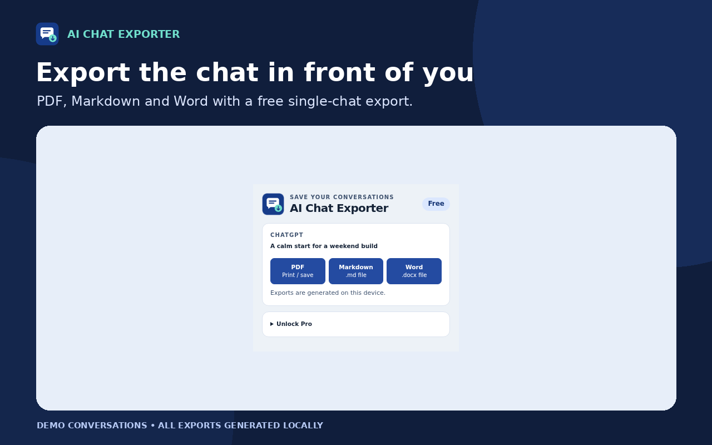
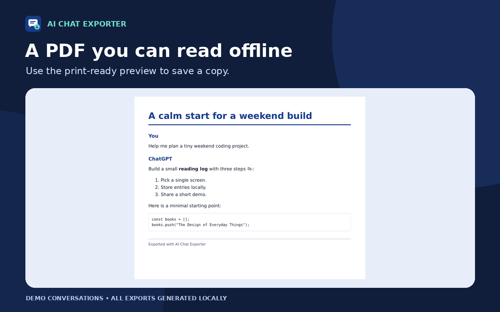

Open a print-ready preview and choose Save as PDF.
Local exports · Edge & Firefox
Save your AI chats as files.
Export ChatGPT, Claude and Gemini conversations to PDF, Markdown or Word. Free for single chats, with no exporter account required.
Get AI Chat ExporterYour conversations stay on your device.

Choose the format you need
Open a conversation on ChatGPT, Claude or Gemini, click the extension, and choose a format.
Markdown
Download a .md file for your notes or editor.
Word
Download an editable .docx file.

One-time purchase, no subscription
Free for single chats. Pro for $9.
| Feature | Free | Pro |
|---|---|---|
| Single chat to PDF, Markdown or Word | Yes | Yes |
| Remove exporter footer | No | Yes |
| Combine visible sidebar chats | No | Yes |
| Export selected messages | No | Yes |
| Custom filenames and optional metadata | No | Yes |
Frequently asked questions
Do I need an account?
No account with AI Chat Exporter is needed. Sign in to your chat service if it requires you to.
Are my conversations uploaded?
No. Exports are created locally. If you activate Pro, the extension contacts Gumroad to verify your license key, not to send your chats. See the privacy policy.
How do I activate Pro?
Once the product is available, buy a license on Gumroad and enter the key in the extension’s Pro license section.
Get AI Chat Exporter
Store and purchase links will be available at launch.